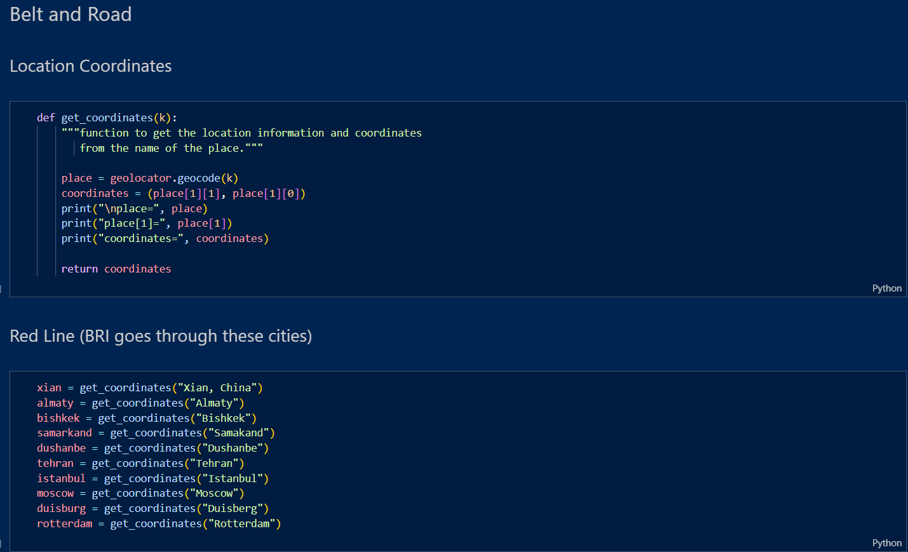
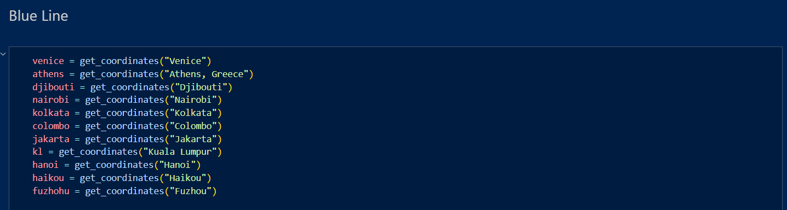
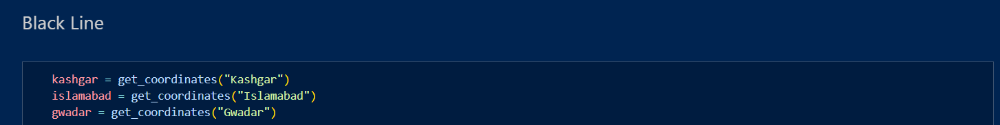
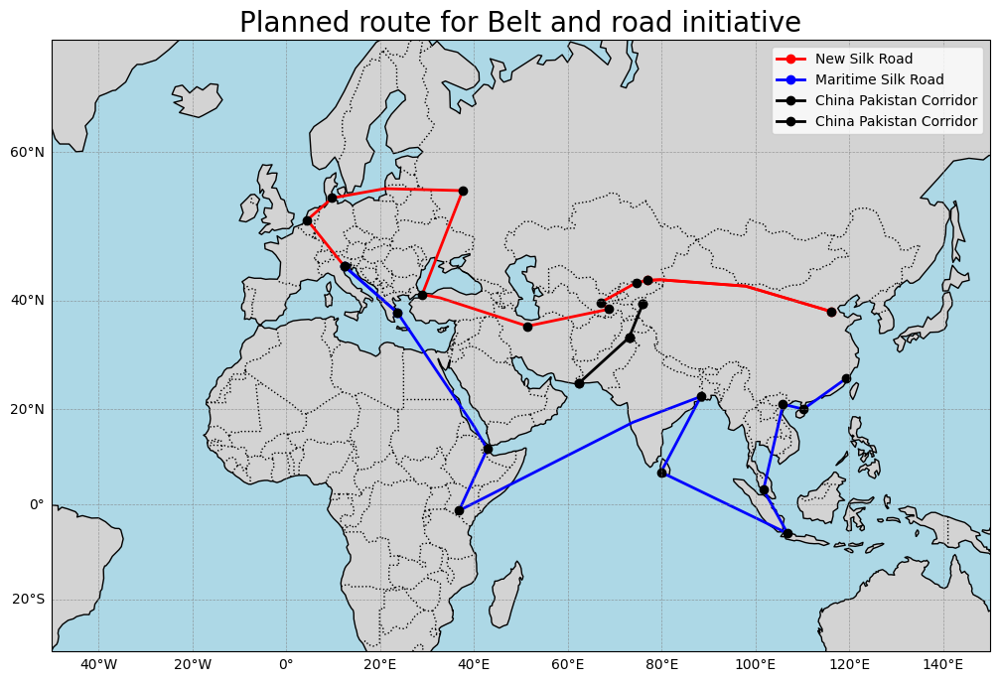

Introduction
This project aims to create an interactive and informative geospatial visualization of natural gas and oil pipelines across Turkey and the Eastern Mediterranean region. The goal is to better understand the region’s energy infrastructure, key transit routes, and geopolitical relevance using Python-based mapping libraries.
| Python Library | Description |
|---|---|
| Cartopy | For high-quality static map projections and geographical plotting |
| Folium | For creating interactive web-based maps |
| GeoPandas | For working with shapefiles and geospatial data |
| Nominatim | It is a software program to search Openstreetmap data by name and address. It is a geocoding service |
TurkStream Pipeline
The TurkStream pipeline is a natural gas pipeline that transports Russian gas across the Black Sea to Turkey. It begins in Anapa, Russia, and ends in Kıyıköy, Turkey, with one line supplying Turkey and a second extending toward southern Europe.
We use the geolocator function to get the coordinates of both the source and destination
Plotting the pipeline using Cartopy

Mapping the shortest distance between the two points on the map

EastMed Pipeline
The EastMed pipeline is a proposed 1,900 km natural gas pipeline intended to transport gas from offshore fields in the Eastern Mediterranean near Israel and Cyprus to mainland Greece via Crete, and eventually to Italy and Europe. It aims to enhance European energy security by diversifying supply routes away from Russian gas.


Plotting the final EastMed pipeline across three regions


Gas fields offshore of Israel to Cyprus: 165 km
Cyprus to East Crete Island: 732 km
Crete Island to South Peloponnese: 421 km
Peloponnese to western Greece: 317 km
Belt and Road Initiative
The Belt and Road Initiative (BRI) is a massive global infrastructure and investment program launched by China in 2013 by President Xi Jinping. Its core aims are to enhance connectivity, trade, and cooperation across Asia, Africa, Europe, and beyond through expansive networks of land and maritime routes—reviving the historic Silk Road and Maritime Silk Road trade paths.
   The BRI involves investments in approximately 70 countries and international organisations connecting two ends of Eurasia along with stops in Africa and Oceania to create a unified large market, an economic development zone. The connection will be made with both a maritime route across the sea and an overland route. The goal is to complete the entire project in around 2050.
Geopolitical Implications: